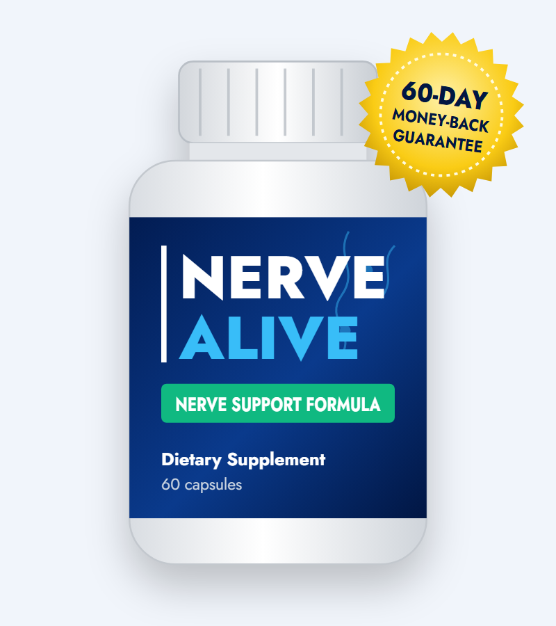
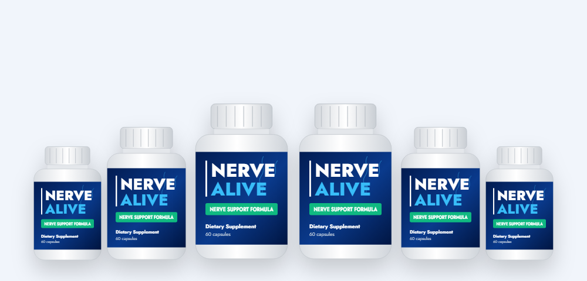

Calming Pain Signals
Corydalis contains alkaloids such as dehydrocorybulbine and tetrahydropalmatine, which lab and animal studies link to reduced pain signaling. California poppy has a long history as a gentle pain and sleep herb.*
What's really on the label, what the research shows, who should be careful, and where to buy safely

Nerve Alive is a two-capsule daily supplement sold to people dealing with tingling, burning or aching nerve discomfort in the hands and feet. In this Nerve Alive review we go through the actual supplement facts label — five plant ingredients with their exact doses — compare it with the research, explain who should be careful, and cover the current price and how to order from the Nerve Alive official website.
The Nerve Alive supplement is a capsule formula marketed to adults who live with nerve discomfort — the pins-and-needles, burning, numbness or aching that often starts in the feet and hands. Each bottle holds 60 vegetarian capsules, and the suggested serving is two a day, so one bottle lasts a month.
According to its label, Nerve Alive contains five plant ingredients: passion flower, marshmallow root, corydalis, prickly pear and California poppy seed. The label credits a distributor in Lakeland, Florida, and the product is sold online through the vendor's own website.
The sales page says Nerve Alive works by calming "overactive microglia," immune cells in the nervous system that research has linked to some types of chronic pain. In practice, three of the five ingredients — corydalis, California poppy and passion flower — are traditional calming and comfort herbs. That makes Nerve Alive closer to a relaxation-and-comfort formula than a nerve-rebuilding one.
It's important to set expectations: Nerve Alive is a supplement, not a medicine. It isn't approved to treat neuropathy, and nerve symptoms always deserve a proper diagnosis, because the cause — diabetes, vitamin B12 deficiency, thyroid problems and more — determines the right treatment.
Based on its ingredients, Nerve Alive works in three ways.*
Corydalis contains alkaloids such as dehydrocorybulbine and tetrahydropalmatine, which lab and animal studies link to reduced pain signaling. California poppy has a long history as a gentle pain and sleep herb.*
Passion flower and California poppy are used for anxiety and sleep. Nerve discomfort is often worst at night, so better rest can make symptoms easier to live with.*
Marshmallow root is a traditional soothing herb, and prickly pear supplies antioxidant plant compounds that may help with inflammation.*
What Nerve Alive does not do is supply the nutrients nerves need to repair themselves. There's no vitamin B12, B1 (benfotiamine), alpha lipoic acid or acetyl-L-carnitine on the label — the ingredients with the strongest evidence in nerve health research. Some websites claim Nerve Alive contains them; the real label doesn't.
So the honest summary is that the Nerve Alive formula may help some people feel calmer, sleep better and notice their discomfort less. It's not designed to fix the underlying cause of nerve damage.
Here is the full Nerve Alive supplement facts label, per two-capsule serving.
| Ingredient | Amount | Traditional / studied use |
|---|---|---|
| Passion flower herb powder (Passiflora incarnata) | 145 mg | Anxiety, restlessness and sleep |
| Marshmallow root (Althaea officinalis) | 110 mg | Soothing herb for irritated tissues |
| Corydalis powder (Corydalis yanhusuo) | 100 mg | Pain relief in traditional Chinese medicine |
| Prickly pear 20:1 extract (Opuntia) | 50 mg (≈1 g fruit) | Antioxidant; studied for inflammation and blood sugar |
| California poppy seed (Eschscholzia californica) | 45 mg | Mild pain relief and sleep |
Other ingredients: magnesium stearate, hypromellose (vegetarian capsule). Total active ingredients: 450 mg per serving.
The key ingredient in Nerve Alive for comfort. Corydalis root has been used for pain in traditional Chinese medicine for centuries, and its alkaloids show pain-relieving effects in animal studies. Traditional doses are usually several grams; Nerve Alive uses 100 mg of powder.*
A gentle, non-opioid relative of the poppy family used for sleep, nervous tension and mild pain. It is often paired with corydalis in herbal comfort blends.*
The largest ingredient in Nerve Alive. Small human studies suggest passion flower may ease anxiety and improve sleep quality, which can matter when discomfort keeps you awake.*
Rich in mucilage, marshmallow root is used mostly for throat and digestive comfort. There's little research on nerve health specifically.*
The cactus fruit extract supplies antioxidant betalains. Some studies link prickly pear to lower blood sugar and inflammation — relevant because diabetes is the most common cause of neuropathy.*
The front of the bottle says "With Magnesium," but no magnesium appears in the supplement facts panel. The only magnesium is magnesium stearate, a tiny amount used to help capsules fill smoothly — not a nutritional dose.
The sales page uses words like "proven" and "breakthrough." Here's an honest look at the evidence for each Nerve Alive ingredient.
| Ingredient | In Nerve Alive | Evidence level | What studies suggest |
|---|---|---|---|
| Corydalis | 100 mg | Animal + traditional; few human trials | Pain-relieving alkaloids in lab and animal models of nerve pain |
| California poppy | 45 mg | Limited | Mild sedative and calming effects; mostly in combination products |
| Passion flower | 145 mg | Small human trials | Modest help for anxiety and sleep quality |
| Prickly pear | 50 mg (20:1) | Small human trials | Antioxidant; may lower after-meal blood sugar |
| Marshmallow root | 110 mg | Very limited for nerves | Soothing for mucous membranes; no nerve trials |
Research has linked overactive microglia — immune cells in the brain and spinal cord — to some forms of chronic nerve pain, and that's a genuine area of science. But there's no published evidence that the Nerve Alive formula, at these doses, calms microglia in people. The connection on the sales page is a theory built from separate lab studies.
Clinical studies on nerve health most often test alpha lipoic acid (600 mg a day), benfotiamine, vitamin B12 for people who are deficient, and acetyl-L-carnitine. Nerve Alive includes none of these. If your symptoms are linked to a B12 deficiency — common in people taking metformin or acid-reducing medicine — no herbal comfort formula will fix it.
The vendor says more than 87,000 Americans have used Nerve Alive and that it has "zero side effects." Neither claim can be checked independently, and any product with calming herbs can cause drowsiness. The sales page also shows an "FDA Approved" seal — the FDA does not approve dietary supplements.
Our take: Nerve Alive is a short, transparent label of calming and comfort herbs. It may help some people relax and sleep with less discomfort, but it isn't a proven neuropathy treatment and doesn't contain the nutrients with the strongest nerve research.
Based on its ingredients, these are the benefits Nerve Alive is designed to support.*
Corydalis and California poppy are traditional herbs for easing discomfort.*
Passion flower and California poppy may help you relax and fall asleep when nighttime symptoms keep you up.*
Living with nerve discomfort is stressful. Passion flower is studied for easing mild anxiety and tension.*
Prickly pear supplies antioxidant plant pigments that help protect cells from oxidative stress.*
Marshmallow root rounds out a gentle, plant-only formula.*
Two vegetarian capsules a day, a short label and no proprietary blend.*
Using Nerve Alive is simple. Based on the label:
Keep a simple symptom diary — discomfort score, sleep and drowsiness — so you can judge Nerve Alive honestly well before the 60-day guarantee ends.
The vendor says Nerve Alive has "zero side effects." Calming herbs do have effects, though — that's why they're used. Here's a balanced view:
If your nerve symptoms are new, getting worse, or affecting only one side of your body, see a doctor before trying any supplement.
The label says Nerve Alive isn't for pregnant or nursing women or anyone under 18, and that people with a medical condition should consult a physician first. The capsules are vegetarian.
We looked at the Nerve Alive label, the evidence, the price and the guarantee. Here's our honest assessment.
Nerve Alive is a simple herbal comfort formula built around corydalis, California poppy and passion flower. It may help some people relax, sleep and notice their nerve discomfort less — but it doesn't repair nerves, it lacks the nutrients with the best nerve research, and it can interact with medicines many neuropathy patients take. If your doctor agrees it's safe for you, buy from the official website so you're covered by the 60-day guarantee, and judge it honestly within that window.
Visit the Nerve Alive Official WebsiteA fair look at what's trustworthy about Nerve Alive and what deserves a closer look.
Overall, Nerve Alive appears to be a real product with a real label and a refund policy, so it isn't a scam in the sense of taking money and shipping nothing. The problem is the marketing, which promises far more than five calming herbs can deliver. Go in expecting possible help with comfort and sleep rather than nerve "regeneration," and you'll be far less likely to be disappointed.
To protect yourself, buy only through the official order page, save your confirmation email, and set a reminder around day 50 so you can request a refund in time if Nerve Alive doesn't help.
How Nerve Alive compares with the most common alternatives for nerve discomfort.
| Option | How it works | Typical cost | Main downside |
|---|---|---|---|
| Nerve Alive | Five calming and comfort herbs | $49–$79 per month | No nerve nutrients; drowsiness; limited evidence |
| Nerve-nutrient formulas | Alpha lipoic acid, benfotiamine, B12, acetyl-L-carnitine | $20–$40 per month | Work slowly; B12 helps mainly if deficient |
| Prescription medicine | Gabapentin, pregabalin, duloxetine and others | Often low with insurance | Needs a doctor; side effects such as drowsiness |
| Treating the cause | Blood sugar control, B12 repletion, less alcohol, foot care | Varies | Takes time — but it's what slows nerve damage |
Prescription treatments are tested in large clinical trials. A supplement may support comfort but isn't a substitute for medical care.
No supplement works on its own — Nerve Alive included. These habits have the strongest evidence for protecting nerves and easing symptoms:
High blood sugar is the leading cause of peripheral neuropathy. Good glucose control is the single most effective way to slow nerve damage in people with diabetes.
Low B12 causes tingling and numbness and is common in older adults, vegetarians and people taking metformin or acid reducers. A simple blood test can rule it out.
Walking, cycling or swimming improves circulation to the feet and hands. Balance exercises lower fall risk when feeling in the feet is reduced.
Heavy drinking damages nerves directly and depletes B vitamins. It also adds to the drowsiness from calming herbs like those in Nerve Alive.
Check your feet daily for cuts or blisters, wear well-fitting shoes, and keep skin moisturized — reduced feeling means small injuries can go unnoticed.
A cool, dark bedroom, a regular bedtime and less screen time at night help, especially when discomfort flares in the evening.
Nerve symptoms have many causes, and some need prompt treatment. See a doctor before relying on Nerve Alive or any supplement if:
A doctor can order blood tests, check your reflexes and sensation, and refer you for nerve studies if needed. Finding the cause makes the biggest difference, and your doctor can also tell you whether Nerve Alive is safe alongside your current treatment.
Search for the Nerve Alive official website and you'll find many sites with near-identical names — narvealive.com, nervealiveofficial.com, buy-nervealive.com, nervealiveshop.com and more. Some list ingredients that aren't on the real label, such as benfotiamine, alpha lipoic acid and vitamin B12. Here's how to make sure you're buying genuine Nerve Alive:
For the full guarantee and free e-books, order from the Nerve Alive official website.
Each Nerve Alive bottle is a 30-day supply. Every package is covered by the 60-day money-back guarantee.
60-Day Supply · Try Two
$79/bottle
No bonuses
180-Day Supply
$49/bottle
+ 2 free e-books
90-Day Supply · Most Popular
$69/bottle
+ 2 free e-books
Prices checked on the official order page on October 17, 2026 and may change. One-time payment — no subscription.
The 3-bottle and 6-bottle Nerve Alive packages include two digital e-books, available as an instant download.
A guide to living with neuropathy that covers medications the author considers harmful, exercise mistakes and warning signs to watch. Discuss any medication changes with your doctor rather than stopping on your own.
Smoothie recipes and lifestyle tips aimed at nerve comfort. A handy companion to the healthy habits listed above.
The 2-bottle package doesn't include the bonuses.
The best place to buy Nerve Alive is the official website, which offers the bundle prices, free e-books and the 60-day guarantee. Here's how to order:

Every Nerve Alive order from the official website is covered by a 60-day money-back guarantee from the date of purchase.
The vendor's FAQ says you can call or email customer service for a refund and don't need to send the bottles back. Its guarantee section also asks that you use the product for at least 30 days before deciding.
Keep your order confirmation, note the date, and contact support well before day 60. The guarantee only applies to orders placed through the official website.
Try Nerve Alive Risk-FreeNerve Alive is a dietary supplement for adults with nerve discomfort. Its label lists five plant ingredients — passion flower, marshmallow root, corydalis, prickly pear and California poppy — taken as two capsules a day.
Corydalis and California poppy have traditional and some modern research for pain and relaxation, and passion flower is studied for calm and sleep. But the doses are modest, the finished Nerve Alive formula has no published clinical trial, and it does not contain the nutrients with the best evidence for neuropathy. It may help with comfort and sleep for some people; it does not repair nerves.
The vendor's order page is on nervealive.com. Many look-alike sites with similar names call themselves the Nerve Alive official website, and orders from them may not include the 60-day money-back guarantee.
On the official order page Nerve Alive costs $79 per bottle for 2 bottles ($158 plus shipping), $69 per bottle for 3 bottles ($207 with free US shipping) and $49 per bottle for 6 bottles ($294 with free US shipping). The 3- and 6-bottle packages include two free e-books. Each bottle is a 30-day supply.
Per two-capsule serving, the Nerve Alive label lists passion flower herb powder (145 mg), marshmallow root (110 mg), corydalis powder (100 mg), prickly pear 20:1 extract (50 mg) and California poppy seed (45 mg), in a vegetarian capsule.
The bottle says "With Magnesium," but the supplement facts panel lists no magnesium as an active ingredient. Magnesium appears only as magnesium stearate, a small amount of a common capsule-filling aid, which does not provide meaningful dietary magnesium.
The most likely side effect is drowsiness, because corydalis, California poppy and passion flower are calming herbs. Do not combine Nerve Alive with alcohol, sleep aids, opioids, gabapentin, pregabalin or other sedating medicine without your doctor's approval, and avoid it if you have liver disease or are pregnant.
According to the label, take two Nerve Alive capsules a day with an 8 oz glass of water. Each bottle holds 60 capsules, enough for 30 days. Because the herbs can cause drowsiness, many people take them in the evening.
The vendor's testimonials describe changes within two to three weeks and the FAQ mentions two months of use. Calming herbs can have an effect within days, but judge Nerve Alive over several weeks of consistent use.
No. Nerve Alive is sold as a one-time purchase with no auto-ship, according to the vendor.
Nerve Alive has a 60-day money-back guarantee from the date of purchase. The vendor says you can contact support for a refund and do not have to send the bottles back; its guarantee section also asks that you try it for at least 30 days first.
Nerve Alive listings appear on Amazon from third-party sellers. Those orders may not include the official package prices, free e-books or the 60-day money-back guarantee, which apply to orders from the official website.
Get Nerve Alive for as little as $49 per bottle with free US shipping on the 6-bottle package — with two free e-books and a 60-day money-back guarantee.
Order Nerve Alive Now